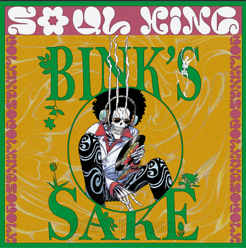

Yo-hohoho, Yo-hohoho Yo-hohoho, Yo-hohoho Yo-hohoho, Yo-hohoho Yo-hohoho, Yo-hohoho Binkusu no sake wo, todoke ni yuku yo Umikaze kimakase namimakase Shio no mukou de, yuuhi mo sawagu Sora nya wa o kaku, tori no uta Sayonara minato, Tsumugi no sato yo DON to icchou utao, funade no uta Kinpa-ginpa mo shibuki ni kaete Oretacha yuku zo, umi no kagiri Binkusu no sake wo, todoke ni yuku yo Warera kaizoku, umi watteku Nami o makura ni, negura wa fune yo Ho ni hata ni ketateru wa dokuro Arashi ga kita zo, senri no sora ni Nami ga odoru yo, DORAMU narase Okubyoukaze ni fukarerya saigo Asu no asahi ga nai ja nashi Yo-hohoho, Yo-hohoho Yo-hohoho, Yo-hohoho Yo-hohoho, Yo-hohoho Yo-hohoho, Yo-hohoho Binkusu no sake wo, todoke ni yuku yo Kyou ka asu ka to yoi no yume Te o furu kage ni, mou aenai yo Nani o kuyokuyo, asu mo tsukuyo Binkusu no sake wo, todoke ni yuku yo DON to icchou utao, unaba no uta Douse dare demo itsuka wa hone yo Hatenashi, atenashi, waraibanashi Yo-hohoho, Yo-hohoho Yo-hohoho, Yo-hohoho Yo-hohoho, Yo-hohoho Yo-hohoho, Yo-hohoho